These methods tidy the coefficients of a linear model into a summary, augment the original data with information on the fitted values and residuals, and construct a one-row glance of the model's statistics.
# S3 method for lm tidy(x, conf.int = FALSE, conf.level = 0.95, exponentiate = FALSE, quick = FALSE, ...) # S3 method for summary.lm tidy(x, ...) # S3 method for lm augment(x, data = stats::model.frame(x), newdata, type.predict, type.residuals, ...) # S3 method for lm glance(x, ...) # S3 method for summary.lm glance(x, ...)
Arguments
| x | lm object |
|---|---|
| conf.int | whether to include a confidence interval |
| conf.level | confidence level of the interval, used only if
|
| exponentiate | whether to exponentiate the coefficient estimates and confidence intervals (typical for logistic regression) |
| quick | whether to compute a smaller and faster version, containing
only the |
| ... | extra arguments (not used) |
| data | Original data, defaults to the extracting it from the model |
| newdata | If provided, performs predictions on the new data |
| type.predict | Type of prediction to compute for a GLM; passed on to
|
| type.residuals | Type of residuals to compute for a GLM; passed on to
|
Value
All tidying methods return a data.frame without rownames.
The structure depends on the method chosen.
tidy.lm returns one row for each coefficient, with five columns:
The term in the linear model being estimated and tested
The estimated coefficient
The standard error from the linear model
t-statistic
two-sided p-value
Which response column the coefficients correspond to (typically Y1, Y2, etc)
Diagonal of the hat matrix
Estimate of residual standard deviation when corresponding observation is dropped from model
Cooks distance, cooks.distance()
Fitted values of model
Standard errors of fitted values
Residuals
Standardised residuals
Fitted values of model
Standard errors of fitted values
Residuals of fitted values on the new data
The percent of variance explained by the model
r.squared adjusted based on the degrees of freedom
The square root of the estimated residual variance
F-statistic
p-value from the F test, describing whether the full regression is significant
Degrees of freedom used by the coefficients
the data's log-likelihood under the model
the Akaike Information Criterion
the Bayesian Information Criterion
deviance
residual degrees of freedom
Details
If you have missing values in your model data, you may need to refit
the model with na.action = na.exclude.
If conf.int=TRUE, the confidence interval is computed with
the confint() function.
While tidy is supported for "mlm" objects, augment and
glance are not.
When the modeling was performed with na.action = "na.omit"
(as is the typical default), rows with NA in the initial data are omitted
entirely from the augmented data frame. When the modeling was performed
with na.action = "na.exclude", one should provide the original data
as a second argument, at which point the augmented data will contain those
rows (typically with NAs in place of the new columns). If the original data
is not provided to augment and na.action = "na.exclude", a
warning is raised and the incomplete rows are dropped.
Code and documentation for augment.lm originated in the
ggplot2 package, where it was called fortify.lm
See also
summary.lm()
na.action
Examples
#> # A tibble: 3 x 5 #> term estimate std.error statistic p.value #> <chr> <dbl> <dbl> <dbl> <dbl> #> 1 (Intercept) 19.7 5.25 3.76 7.65e- 4 #> 2 wt -5.05 0.484 -10.4 2.52e-11 #> 3 qsec 0.929 0.265 3.51 1.50e- 3glance(mod)#> # A tibble: 1 x 11 #> r.squared adj.r.squared sigma statistic p.value df logLik AIC BIC #> * <dbl> <dbl> <dbl> <dbl> <dbl> <int> <dbl> <dbl> <dbl> #> 1 0.826 0.814 2.60 69.0 9.39e-12 3 -74.4 157. 163. #> # ... with 2 more variables: deviance <dbl>, df.residual <int># coefficient plot d <- tidy(mod) %>% mutate(low = estimate - std.error, high = estimate + std.error) ggplot(d, aes(estimate, term, xmin = low, xmax = high, height = 0)) + geom_point() + geom_vline(xintercept = 0) + geom_errorbarh()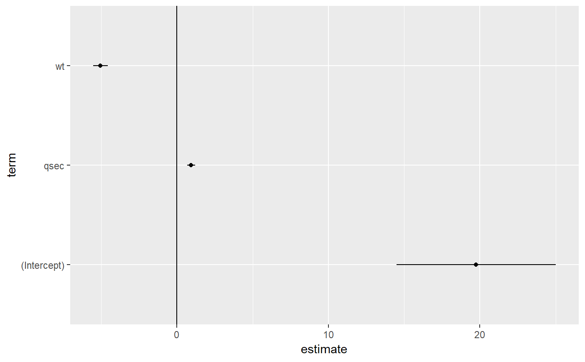#> # A tibble: 6 x 11 #> .rownames mpg wt qsec .fitted .se.fit .resid .hat .sigma .cooksd #> <chr> <dbl> <dbl> <dbl> <dbl> <dbl> <dbl> <dbl> <dbl> <dbl> #> 1 Mazda RX4 21 2.62 16.5 21.8 0.683 -0.815 0.0693 2.64 2.63e-3 #> 2 Mazda RX4 W~ 21 2.88 17.0 21.0 0.547 -0.0482 0.0444 2.64 5.59e-6 #> 3 Datsun 710 22.8 2.32 18.6 25.3 0.640 -2.53 0.0607 2.60 2.17e-2 #> 4 Hornet 4 Dr~ 21.4 3.22 19.4 21.6 0.623 -0.181 0.0576 2.64 1.05e-4 #> 5 Hornet Spor~ 18.7 3.44 17.0 18.2 0.512 0.504 0.0389 2.64 5.29e-4 #> 6 Valiant 18.1 3.46 20.2 21.1 0.803 -2.97 0.0957 2.58 5.10e-2 #> # ... with 1 more variable: .std.resid <dbl>#> # A tibble: 6 x 19 #> .rownames mpg cyl disp hp drat wt qsec vs am gear carb #> <chr> <dbl> <dbl> <dbl> <dbl> <dbl> <dbl> <dbl> <dbl> <dbl> <dbl> <dbl> #> 1 Mazda RX4 21 6 160 110 3.9 2.62 16.5 0 1 4 4 #> 2 Mazda RX4 ~ 21 6 160 110 3.9 2.88 17.0 0 1 4 4 #> 3 Datsun 710 22.8 4 108 93 3.85 2.32 18.6 1 1 4 1 #> 4 Hornet 4 D~ 21.4 6 258 110 3.08 3.22 19.4 1 0 3 1 #> 5 Hornet Spo~ 18.7 8 360 175 3.15 3.44 17.0 0 0 3 2 #> 6 Valiant 18.1 6 225 105 2.76 3.46 20.2 1 0 3 1 #> # ... with 7 more variables: .fitted <dbl>, .se.fit <dbl>, .resid <dbl>, #> # .hat <dbl>, .sigma <dbl>, .cooksd <dbl>, .std.resid <dbl># predict on new data newdata <- mtcars %>% head(6) %>% mutate(wt = wt + 1) augment(mod, newdata = newdata)#> # A tibble: 6 x 13 #> mpg cyl disp hp drat wt qsec vs am gear carb .fitted #> * <dbl> <dbl> <dbl> <dbl> <dbl> <dbl> <dbl> <dbl> <dbl> <dbl> <dbl> <dbl> #> 1 21 6 160 110 3.9 3.62 16.5 0 1 4 4 16.8 #> 2 21 6 160 110 3.9 3.88 17.0 0 1 4 4 16.0 #> 3 22.8 4 108 93 3.85 3.32 18.6 1 1 4 1 20.3 #> 4 21.4 6 258 110 3.08 4.22 19.4 1 0 3 1 16.5 #> 5 18.7 8 360 175 3.15 4.44 17.0 0 0 3 2 13.1 #> 6 18.1 6 225 105 2.76 4.46 20.2 1 0 3 1 16.0 #> # ... with 1 more variable: .se.fit <dbl>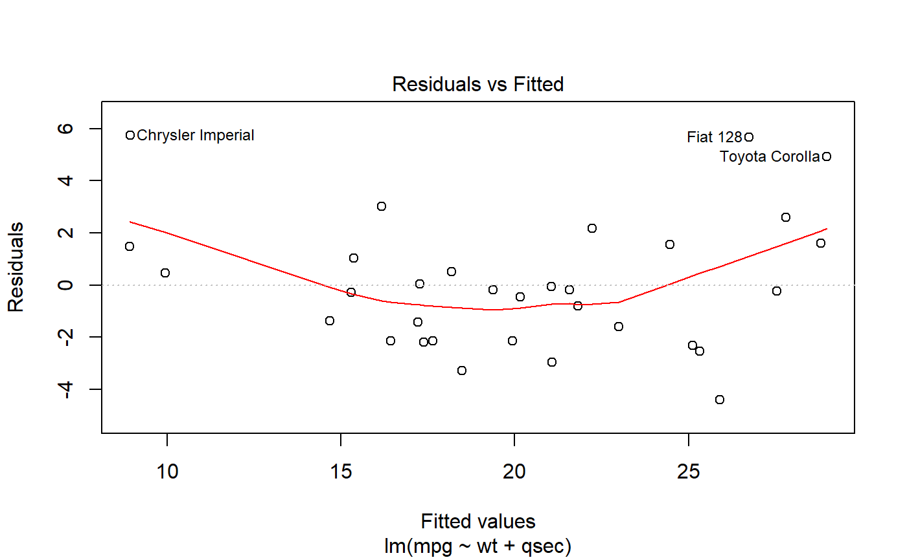#>#>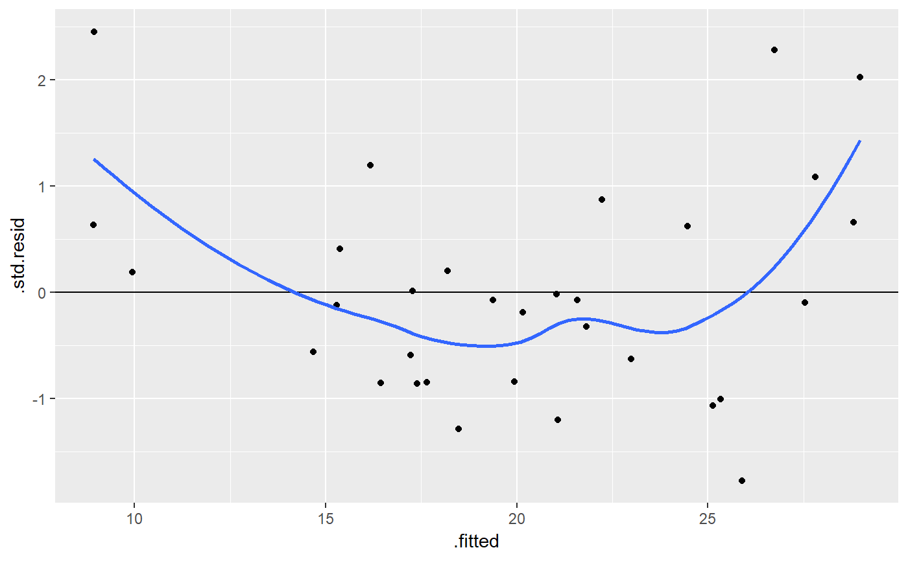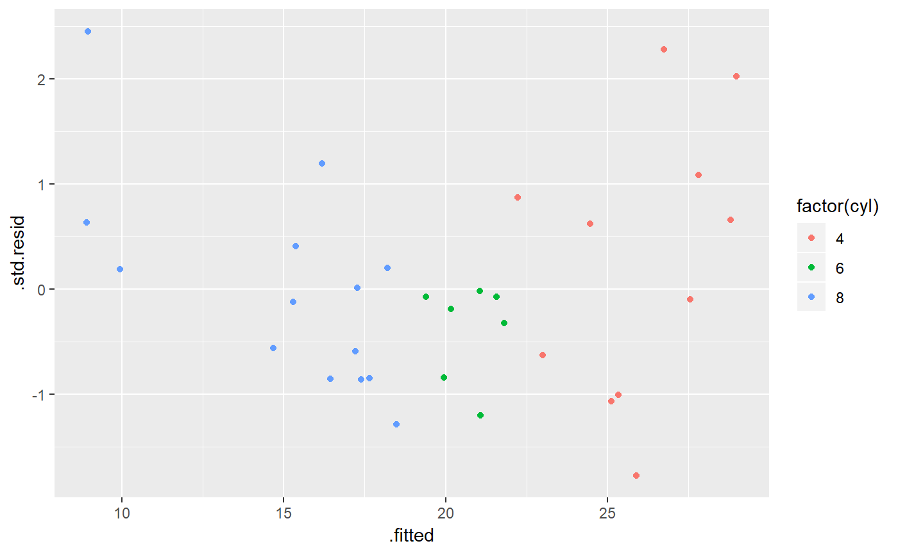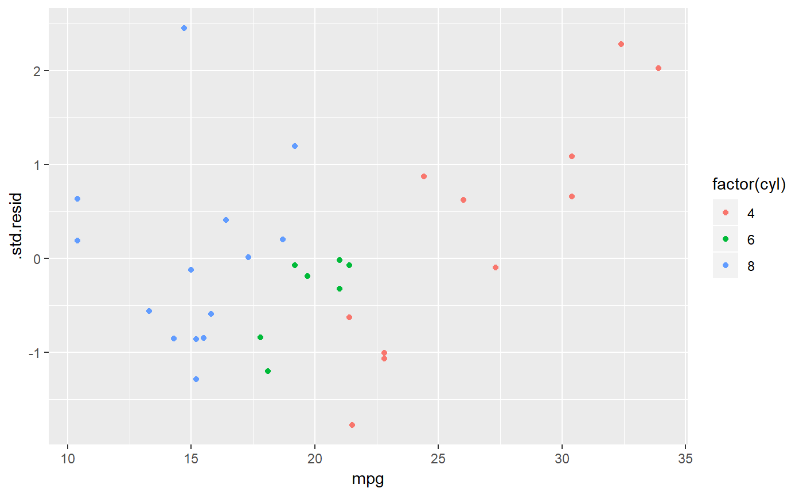plot(mod, which = 2)#> Warning: `stat` is deprecated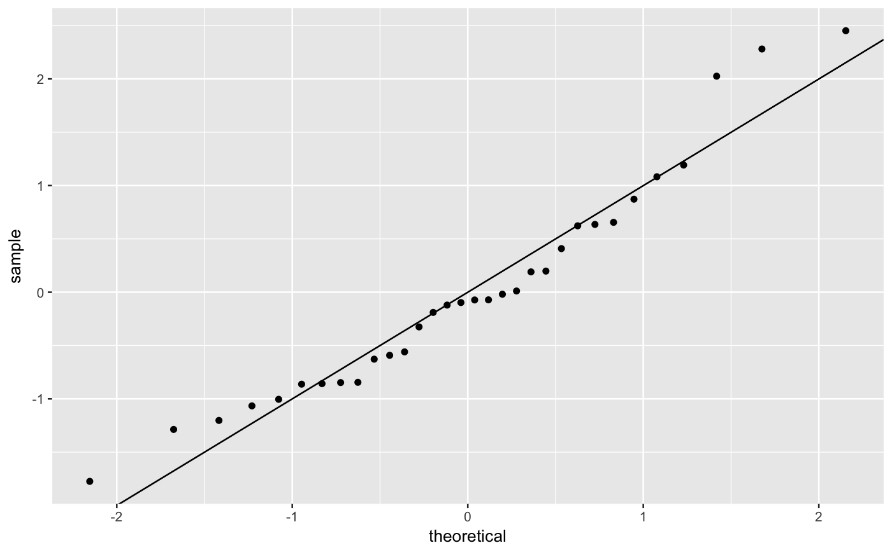plot(mod, which = 3)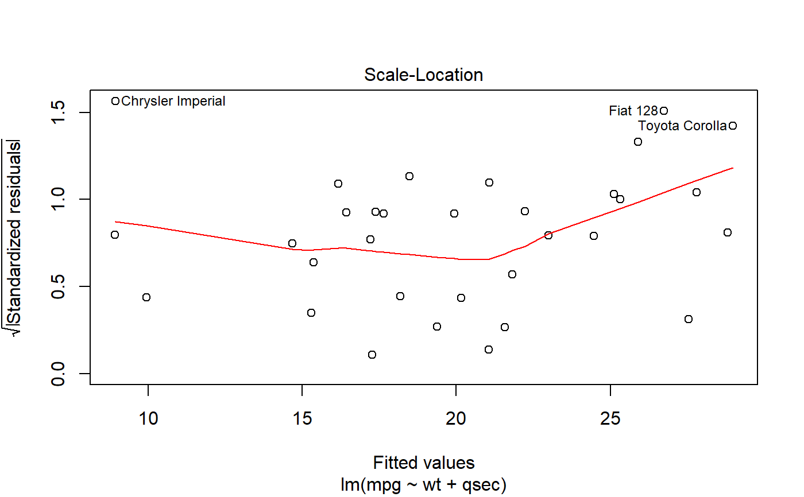#>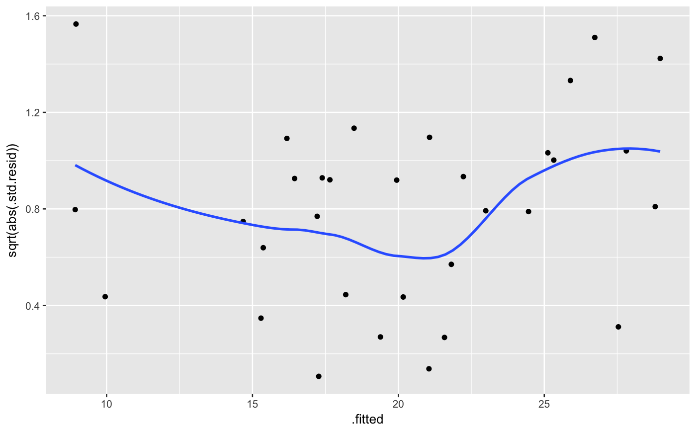plot(mod, which = 4)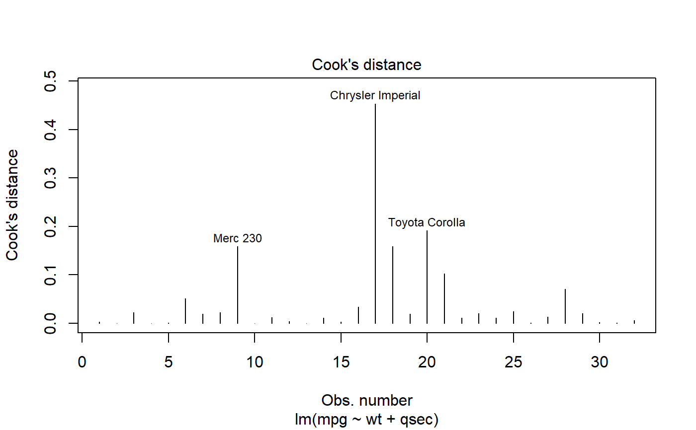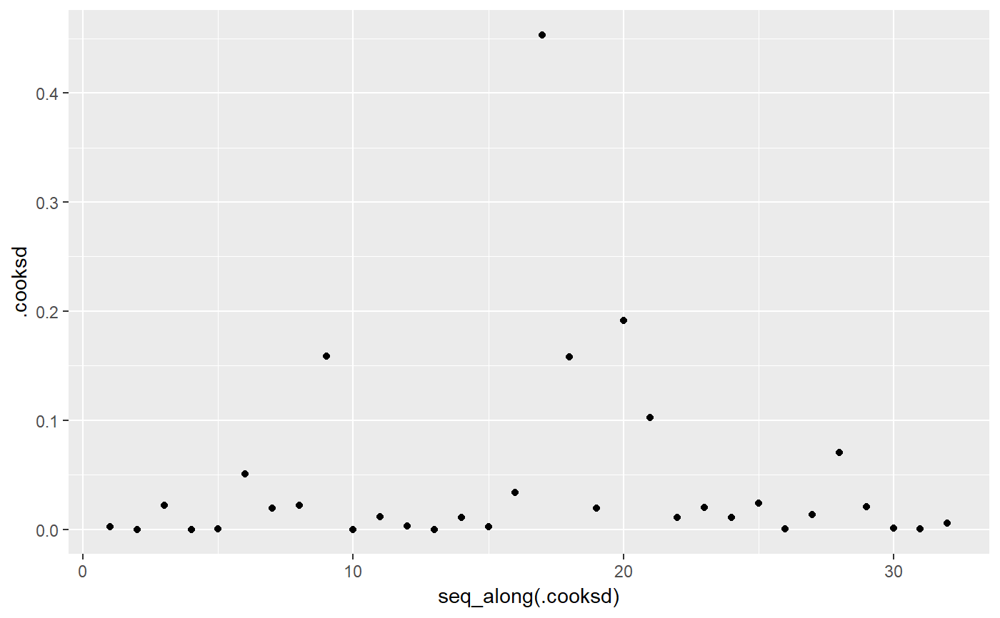plot(mod, which = 5)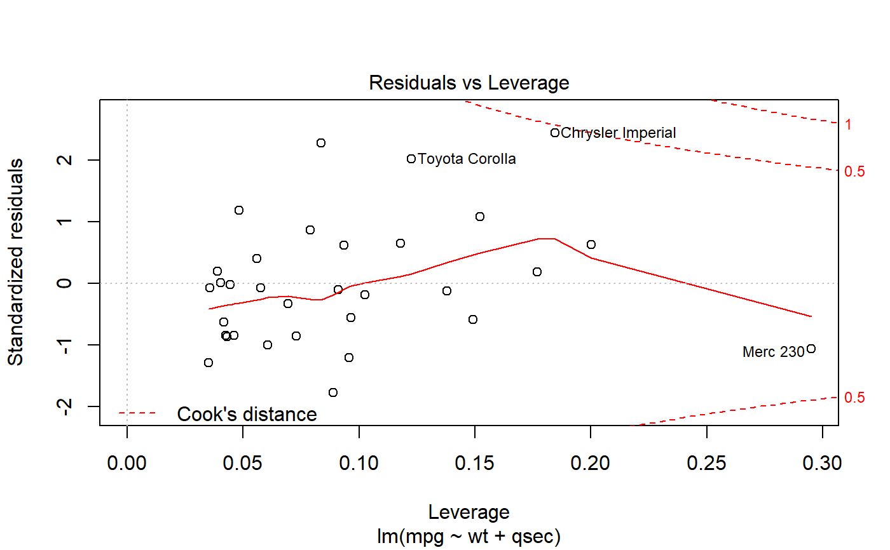#>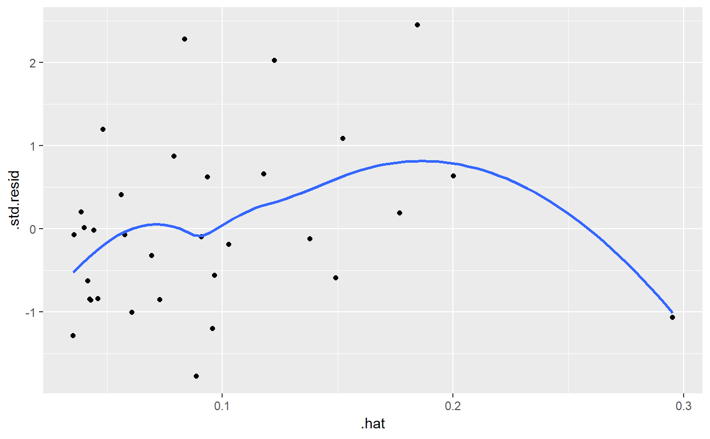ggplot(au, aes(.hat, .std.resid)) + geom_vline(size = 2, colour = "white", xintercept = 0) + geom_hline(size = 2, colour = "white", yintercept = 0) + geom_point() + geom_smooth(se = FALSE)#>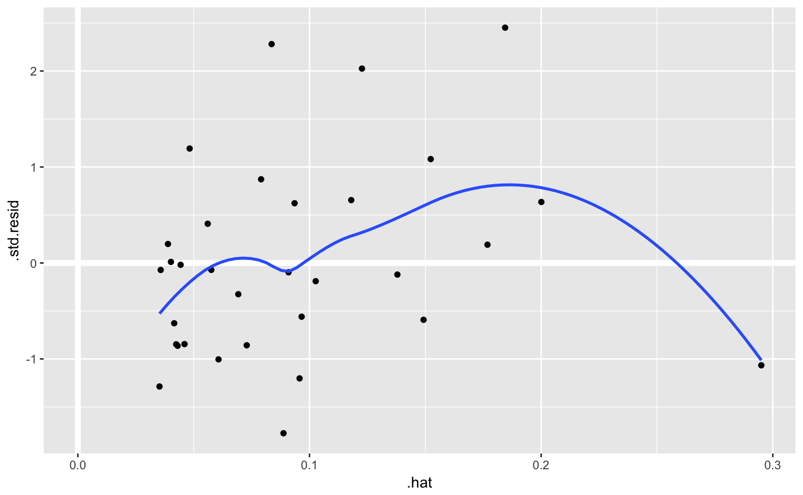#>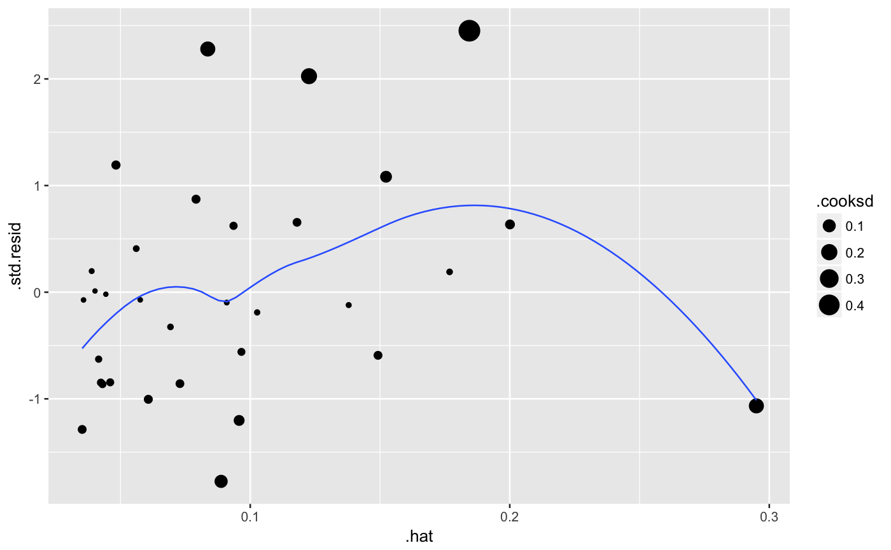plot(mod, which = 6)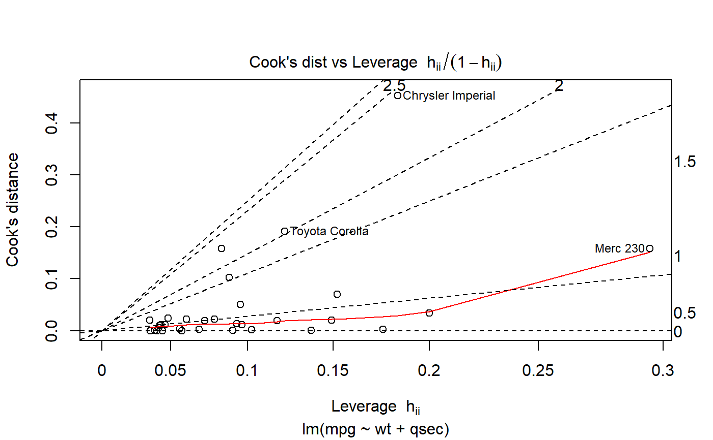ggplot(au, aes(.hat, .cooksd)) + geom_vline(xintercept = 0, colour = NA) + geom_abline(slope = seq(0, 3, by = 0.5), colour = "white") + geom_smooth(se = FALSE) + geom_point()#>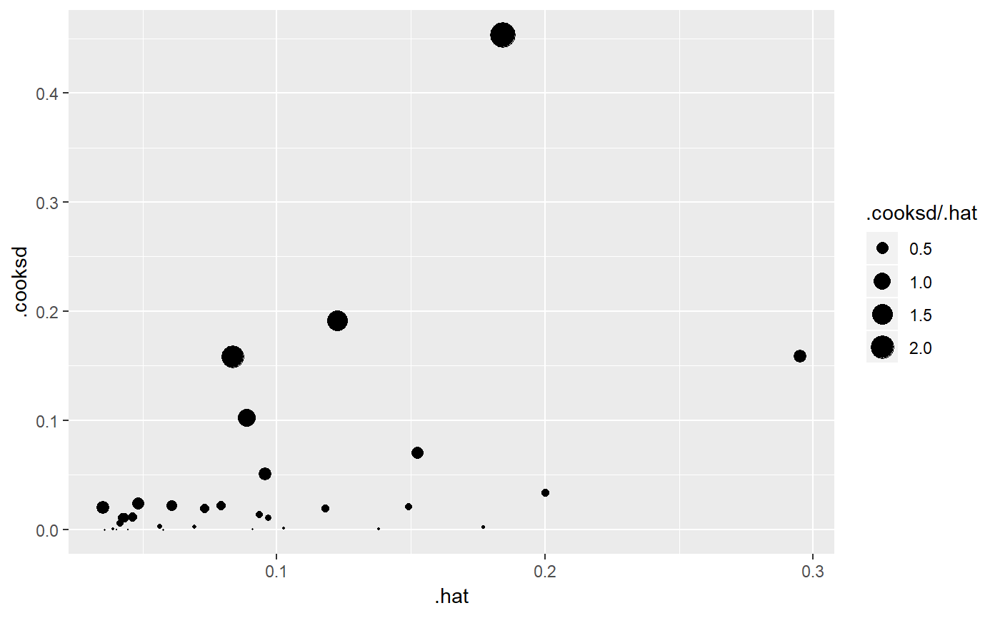# column-wise models a <- matrix(rnorm(20), nrow = 10) b <- a + rnorm(length(a)) result <- lm(b ~ a) tidy(result)#> # A tibble: 6 x 6 #> response term estimate std.error statistic p.value #> <chr> <chr> <dbl> <dbl> <dbl> <dbl> #> 1 Y1 (Intercept) 0.232 0.385 0.602 0.566 #> 2 Y1 a1 1.21 0.470 2.57 0.0368 #> 3 Y1 a2 -0.101 0.343 -0.294 0.777 #> 4 Y2 (Intercept) 0.245 0.520 0.470 0.653 #> 5 Y2 a1 0.293 0.636 0.461 0.659 #> 6 Y2 a2 0.979 0.464 2.11 0.0726